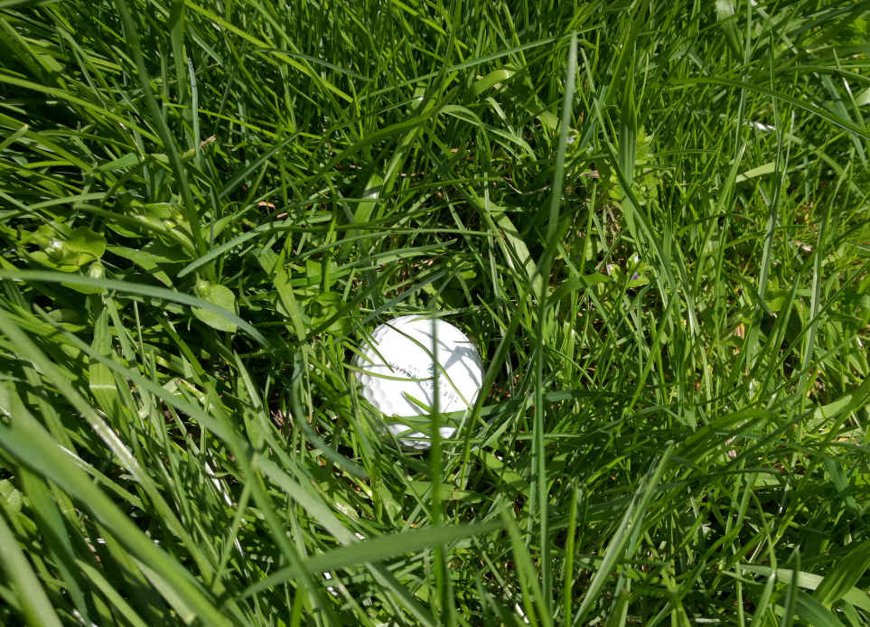
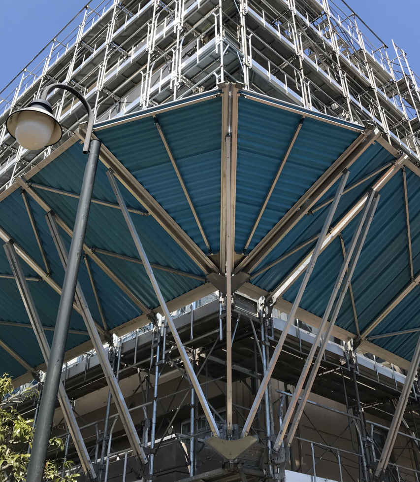

| アームチェア・ゴルファーの緩やかな安息〜ゴルフ・ショート・ストーリーズ Vol.3 | |
| 金子忠義 | |
| (2019) | |
確かに、バブル景気の頃まではゴルフ倶楽部の会員がステイタスにおけるシンボル的な役割を持っていたが、その後のゴルフ場の倒産と外国資本による買い占めが行われた今では、ホントに一部のゴルフ倶楽部を除いてステイタスシンボルの役割は果たさなくなった。
けっこうなことである。
現在、ゴルフ倶楽部として残っているところの多くは、本来のあるべきメンバーソサエティとして機能しているはずだ。
1代限りで家が建つほどの会員権費用に人格とは関係ない社会的地位を求めるゴルフ倶楽部は依然として存在するものの、そんなところばかりではない。
なかには、社会ステイタスに関係なく個人会員がメンバーソサエティを満喫できるところだってある。
そんな、日本のどこかにあるゴルフ倶楽部で起きた話。
第1話 150年の遺恨
「支配人、ちょっといいですか？」
ミラクルカンツリー倶楽部のキャディマスター、館山巌は渋い表情を浮かべてフロントデスク奥にある支配人室に入ってきた。
相変わらず顔は陽に焼けて赤銅色をしており、ポロシャツの袖も胸もはちきれそうだった。
「どうしました？」
スチール製の事務机に座って書類を見ていた支配人の黒沢靖仁は顔を上げて館山を見た。
温厚な顔立ちで静かな口調を崩さず、笑顔を絶やさない。
緩めのワイシャツにネクタイを締めているが、首回りだけを見ても館山と同じくらいの太さがあった。
「今日の組み合わせなんですがね...」
館山はそう言いながらA4のプリントアウトを机にそっと載せた。
「まだ会員のことをよく知らない新人がペアリングしちゃったんですよ...」
黒沢は組合せ表を見た。
「何か、問題でも？」
「ここ...木下さんと前島さん。どちらも今日、子供さんと同伴なんですよ。お父さん同士のハンディキャップも近いし、お子さんはともに今年から大学生。だからいい組み合わせになるんじゃないか、って...」
「木下さんも前島さんも存じ上げていますが、お2人とも人格者ですよ。いつもお友達と来られているからペアリングは初めてですが、問題が発生するようなことはないでしょう」
「だといいんですが...」
館山が言い淀んだので、黒沢は気になって机の引き出しから会員名簿を取り出し、木下と前島のプロフィールを調べた。
「...なるほど...キャディさんは付きますか？」
「いや、4人ともそれなりのアスリートなのでセルフで十分、と。...どうしましょう？まだスタートしていないし、それぞれ2サムで回られた方がよかないですか？」
「いや...」
黒沢はパタン、と会員名簿を閉じると笑顔で館山に言った。
「これも何かの縁でしょう。会員同士のコミュニケーションを深めることは倶楽部の目的でもあります。ティーイングエリアに立った時から18番ホールのカップにボールを入れるまで社会ステイタスは関係ありません。こんなことぐらいでペアリング解消したら会長に怒られますよ？」
会長、という言葉を聞いて館山の表情に笑顔が戻った。
「そうですね。翁だったら『そんなつまらんことで相談するな！』と怒られそうですね」
「何かあった時の責任は私が持ちます。館山さんは心配しないでください」
黒沢が会長と呼び、館山が翁と呼んだ男はミラクルカンツリー倶楽部運営会社の会長であり、靖仁の父だ。
館山は、性格は翁と違って穏やかなのに筋をきちんと通すところがやっぱり親子だな、と支配人室を後にしながら思った。
■
「はじめまして。今日、一緒に回らせていただく前島俊憲です。こっちは息子の俊一です」
背はけっして高くないが、ゴルフよりも柔道をやっていると言われれば誰でも納得するような体型の浅黒い男が声をかけた。
息子も同じ体型だが父より一回り大きい。
「あ、ご丁寧にどうも。私、木下雄一郎です。こっちは息子の雄也です」
身長180cmを超える息子の雄也が黙ってお辞儀をした。細身に見えるがポロシャツから出ている腕にはしっかり筋肉がついていた。
前島俊一は父親譲りのギョロッとした眼で木下雄也を凝視した。
「...君、去年セントラルに来ていなかった？」
去年、文部科学大臣旗争奪全国高等学校ゴルフ選手権の会場となったセントラルゴルフクラブで見かけた顔だ。
「えーっと...高校選手権、出てたけれど...」
「うん、俺の前の組で、細っこい身体なのにヤケに飛ばす選手だな、って覚えてる。俺、この春から日大に行く前島俊一です」
「今年から東北福祉大に行く木下雄也です。こちらこそよろしく」
雄也は差し出された俊一の手を握った。
まるでペンチと握手している気分になった。
「ほお、顔見知りと奇遇ですね。なんだか初対面の緊張が解けた気分です」
「そうですね。今日は楽しくなりそうですね」
俊憲の言葉に雄一郎も笑顔で応えた。
確かに、4人にとって楽しいゴルフだった。
3ホール目までは。
ゆったりとした大きなスイングアークから打ち出される雄也のドライバーショットはラインをトレースするようなストレートボールで飛距離も250ヤード前後と安定している。
一方、俊一は雄也ほど飛ばないものの、コンパクトなトップ位置から振り下ろされるスピーディなスイングは鋭い切れ味のアイアンショットを生み出していた。
2人とも父親に合わせてレギュラーティーから回っているため、PAR4ではショートアイアンしか使っていない。
父親たちも息子ほどではないにせよ、実力は平均的なゴルファーを大きく上回っていた。
3ホールを終えたところで雄也がパープレイ、俊一は1アンダー。2人の父親はともに1オーバーだった。
そして4ホール目。
キャディバッグからニューボールを取り出そうとしていた雄一郎に俊憲が話しかけた。
「ここのコースは何度も来ていますが、こんな好調なスタートを切れたことなんてなかったんですよ。やっぱり同伴者の実力や人格に引っ張られるっていうのはあるんですね」
「いえいえ、それは私も一緒ですよ。この前、山口から幼馴染が来たので一緒に回ったんですけれど、スタートからO.B.でしたから。今日はご一緒できて良かったですよ」
「...ご出身、山口県...ですか？」
「ええ。いいところですよ。良かったら今度、ご案内しますよ」
「はあ...」
「前島さんはどちらのご出身ですか？」
俊憲は躊躇したものの、それから雄一郎の顔を見てはっきり言った。
「福島、会津です」
「ほお、会津ですか。あそこもいいところだ。酒がうまい。私が勤める会社に福島支社があって行ったことがありますが...」
そこまで言って、雄一郎はハッと気がつき、俊憲の表情を伺った。
穏やかに見えたが眼の奥には敵意が感じられた。
「...そういうことです。...今日、負けられないゲームになってしまいましたな」
「親父の番だぞ」
俊一がティーイングエリアから降りてきて俊憲に言った。
「晩飯の約束、忘れるなよ」
「ああ、分かってる。今日は意地でも負けられないからな」
その言葉が俊一ではなく自分に対してと思った時、雄一郎はほんの少し、苛立ちを覚えた。
もちろん、その苛立ちがゴルフにとって最敵であることは分かっていたし、前島ときちんと話をすればわだかまりは（少なくともここでは）解消できるだろうと考えていた。
しかし、前島が快心のティーショットをフェアウェイセンターに飛ばした後、ティーイングエリアから降りてきて雄一郎にニヤッと笑った時、そんな殊勝な考えは見事に吹っ飛んだ。
カチンと来たのだ。
「晩飯の約束ってなに？」
雄也の質問に俊一が答えた。
「ああ、親父と晩飯かけてんのよ。なんか親父、今日は調子良さそうだな」
最後にティーイングエリアに上がった雄一郎はスピーディな方だが、この時は珍しく時間をかけていた。
いや、時間がかかった、と言った方が正しいだろう。
どれほどの名プレイヤーでもルーティンワークを外して余計な時間をかけるとリズムを崩す。
それが精神的起因ならなおさらだ。
雄一郎のスイングは明らかにぎこちなく、ティーショットは大きく右に曲がって白杭の遥か彼方に飛んでいった。
ミラクルカンツリー倶楽部の白杭は文字通りOut of Bounds、つまりコースの外なので隣のホールに行くことはないが、それでも雄一郎を除いた3人は習慣で「フォアー！」と大声で叫んだ。
「くそっ...」
雄一郎は小さく吐き捨てるように言った。
「へえ...珍しいな」
「何が？」
「父さんがO.B.ぐらいであんなこと言うなんて...。いつもなら笑い飛ばすだけなのに」
雄一郎が打ち直しのボールをティーに乗せた時、再び俊憲と眼が合った。
俊憲は次の瞬間、くるりと背を向けて持っていたドライバーをキャディバッグに入れた。
（見る必要もないってことか。失礼な男だ！）
力んだスイングは身体の回転を止め、腕に余計な力を入れる。
3打目も大きくフックしたが、なんとか左のラフに止まった。
カートの後部席に座った2人はそっぽを向き、不機嫌そうな顔をしてまったく会話を交わすことがない。
それからの俊憲と雄一郎のゴルフは（それをゴルフと呼ぶことには抵抗があるが）乱打戦の泥試合だった。
傾斜がキツくても、距離のある池超えでも、アゴが高いフェアウェイバンカーでも、とにかくどこからでもグリーンを狙って相手より1打でも少く上がろうとする。
もちろん、ミラクルカンツリー倶楽部はそんな甘い考えを許容するほど優しくない。
無謀な挑戦に対しては必ずペナルティを与える。
林の中に打ち込み、池に落とし、バンカーからは脱出できず、アプローチはショートかオーバー。
それでも2人は自分たちのミスを認めようとせず、相手のスコアばかり気にかけていた。
この険悪な空気はすぐに伝染する。
雄也も俊一も、相手の父親どころか自分の父親にかける言葉さえ失った。
なんとか9ホール終えた後、昼食は別のテーブルにしましょう、と言ったのは雄一郎だったが、私もそのつもりでした、と答えたのは俊憲だった。
■
「親父、どうしたんだよ、一体...いつもとまるで違うじゃないか...木下さんに何か言われたのか？」
俊一は食堂のテーブルに着くとすぐに俊憲に訊ねた。
「...今日、お前はあの人の息子に絶対、勝て」
「はあ？...なんだよ、急に...負けんのはいやだけれど、誰かに強制されんのはもっと嫌だ。それが親父でもね...せめて理由ぐらい言ってくれよ」
俊憲は口をへの字に曲げたまま、小さく、しかしきっぱりと言った。
「木下さんが...長州人だからだ」
「...それかよ...」
俊一はうんざりした顔で背もたれに深く寄りかかり、大きなため息をついた。
■
「父さん、どうしたの。いつもの冷静さが全然ないよ？なんか前島さんが仇みたいなゴルフをしている」
雄也も同じく雄一郎に質問をしていた。
「仇と見ているのは向こうだ。前島さん、会津の出身なんだってよ」
雄一郎は吐き捨てるように言った。
「その仇って...戊辰戦争のこと？」
「ああ...俺の出身地を言った途端、敵意を剥き出しにしてきた。戊辰戦争、長州だけが会津を攻めたわけでもないし、さかのぼれば長州だって会津にずいぶんと痛い目に合わされているんだ。挑発される謂れはない。しかもゴルフで...」
雄一郎は言いながらまたムカムカした気分になってきた。
「仕掛けてきた以上は返り討ちにしてやる。こっちは官軍様、向こうは会賊だ！」
さて、ここで前島俊憲と木下雄一郎の間で勃発した問題、戊辰戦争のことを少し説明しておこう。
といっても端から端まで、しかも中立的立場で解説していたらキリがないので、なぜ会津藩（福島県：会津若松市）は長州藩（山口県：萩市）だけを目の仇にするのか、という点について。
大政奉還後、明治政府を樹立した薩長や土佐など新政府軍は佐幕派（幕府を補佐するという意味）の掃討を目的として東へ進軍した。この時、奥羽越列藩同盟を始めとする佐幕派との戦いが戊辰戦争で、中でも凄惨を極めたのが会津戦争、鶴ケ城の戦いと言われている。
ちなみ戦争名の由来はに明治元年の干支が戊辰だったことから。
鶴ケ城籠城では予備役の白虎隊や女子供まで自決したことが悲話として語り継がれているが、むしろ
悲惨だったのは開城による降伏後。
朝敵として処罰され、翌明治2年にはお家再興（会津藩ではなく斗南藩として）の名目で下北半島は金田一以北の斗南が与えられたが、石高は28万から3万まで下げられ、荒れ果てた領地はヒエなど雑穀しか収穫できなかった。
元会津藩1.7万人が斗南に移住したものの、その寒さと飢えで老人や幼女は次々に息を引き取ったという。
会津藩士、柴佐多蔵の五男である柴五郎は後に台湾軍司令官などを経て陸軍大将まで上り詰め、「義和団の乱」における勇猛果敢な戦いぶりから「コロネル・シバ」と呼ばれるほど欧米で有名になった最初の日本人と言われているが、西郷隆盛や大久保利通の死に対して「一片の同情もわかず、両雄非業の最後を遂げたるを当然の帰結なり」と回顧している。
これだけでも斗南に追いやられた元会津藩武士の薩長に対する恨みが測り知れるというもの。
しかし、薩長憎しの会津がとりわけ、長州に恨みの矛先を向ける理由は今ひとつ、はっきりしていない。
西郷隆盛も大久保利通も同じ薩摩藩。
会津藩から見れば意見の違う2人でも恨み重なる薩摩という視点では一緒なので柴五郎が回顧録に記すほど胸のつかえが取れる思いであることは分かるが、だからといって長州を特別視する理由にはならない。
一般的な解釈としては西南戦争が上げられる。
戊辰戦争終結後、明治10年に起こった日本最後の内戦で、西郷隆盛率いる士族の反乱であると同時に薩摩閥（薩軍）と長州閥（官軍）の戦いでもあった。
この戦いで元会津藩武士は官軍側として参戦、憎し薩摩閥を討伐したのだから薩摩に対する溜飲を下げたということになる。
つまり消去法だ。
その後、長州閥は山縣有明を頂点として日本軍閥を形成、この時でさえ山縣は優秀な人材であった山川浩を「ありゃ会津で出だろ」と蔑んだこともあるなど大小に渡って軋轢が解消できなかったことが、会津の「長州もっとも憎し」につながっていると言える。
ただ、薩摩藩も土佐藩も維新派として戊辰戦争を戦ったが関ヶ原の戦いでは西軍についたため（長州藩の場合はやや複雑）に外様大名となり、幕府からは冷や飯を食わされた。
これが倒幕につながったと言えるし、長州にしたところで朝廷の命により2度の長州征伐を受けている。
しかも会津戦争の時、長州勢は鶴ケ城攻めに参戦していない。
また会津の悲劇をさらに際立たせた戦死者の「遺体埋葬禁令」も長州が発令したという記載はどこにも見られず、さらに最近になって「遺体埋葬禁令」そのものが発令されていなかったという学説も発表された。
歴史はいつでも時間の流れが1本の太い縄のように見えるが末端は複雑に絡み過ぎて解くことすらできない。戊辰戦争も然り。
しかし事実はともかくとして、語り継がれた記憶は現代でも感情を左右することに十分役立つ。
観光地のタクシーに乗って愛想の良い運ちゃんに出身地を聞かれたところ、正直に「山口です」と答えただけで運ちゃんは無口になり、挙げ句、遠回りされてタクシー代が跳ね上がったとか、旅館の仲居さんが宿帳を見ただけで急にサービスが悪くなったとか、とにかくプライベートレベルからオフィシャルレベルまで「長州憎し」の都市伝説が闊歩している。
簡単に説明するつもりが長くなってしまったが、最後にひとつだけ。
東北大震災の後、萩市は会津若松市に義援金2200万円と下着類やランドセル、保存食などの支援物資を送った。もちろん会津若松市はこの支援を快く受け取っている。
■
2組の様子をレストランの調理場から覗いていた館山が隣の黒沢に言った。
「やっぱりマズかったみたいですよ...」
「でも、まだ殴り合ったってわけじゃないでしょ？」
黒沢は笑顔を絶やさず館山に言った。
「殴り合ってからじゃ遅いでしょ！」
「あんまり大声を出すと聞こえますよ？」
館山は黒沢の悠長な様子に苛立った。
「しっかし、もう150年も前のことでしょう？なんで遺恨が残っているんだか...」
「キリスト教とイスラム教は1000年近く前から啀み合っていますよ？」
黒沢は調理場に並んだ漬物をつまみ、賄いのオバサンに怒られながら続けた。
「Life is a tragedy when seen in close-up, but a comedy in long-shot.」
「...は？」
「チャーリー・チャップリンの言葉です。『人生は近くで見ると悲劇だが、遠くで見ると喜劇である』って意味ですね。自分の人生訓に思えるけれど、見方を変えると当事者同士にとっては悲劇でも、他人から見れば喜劇である、と解釈することもできます。前島さんの感情は前島さんにしかわかりませんよ」
「すみません...迂闊なことを...」
館山は素直に謝って短く刈り込んだ髪を掻いた。
黒沢は館山のそんな実直さが好きだった。
「まあ、もうちょっと様子を見ましょう。ゴルフは18ホール。まだOutが終わったばかりでしょ。折返しで良いことが起こるかもしれないじゃないですか。...あ、吉澤さん、なんかいいことあった？今日、いつに増してキレイだね」
吉澤と呼ばれた賄いのオバサンは、バカなこと言ってんじゃないよ、と笑いながら漬物が盛られた皿を差し出した。
■
「父さんが勤めている会社、福島にも支社があるんだが、そこへ出張に行く時に支社の同僚に言われたことがあるんだ。『お前、こっちに来たら絶対に出身地言うなよ。聞かれたら適当にごまかせ』って。まさかそれ、ホントだとは思わなかったが...」
「でもさ、それ仕事の話でしょ？」
雄也はパスタを食べ終わると口の回りをペーパーナプキンで丁寧に拭き取り、アイスコーヒーを飲みながら言った。
「それに向こうがそう言ってきたからって、なんで挑発に乗っちゃうのさ。ゴルフしてんだよ？なのに官軍様とか会賊とか。鉄砲持って戦争すんの？」
雄也は冷ややかな眼で雄一郎を見た。
「その楽しむべきゴルフに遺恨を持ち込んで敵対視したんだぞ？受けて立たなきゃそれこそ長州人として...」
そこまで言って雄一郎は言葉を飲み込んだ。
「ドメスティックな対抗戦は笑っていられるネタだから楽しいんだ。マジになられると引くだけだよ。案外、こだわってんの父さんじゃないの？嫌な相手なら次から断ればいいだけなのに...」
「...お前は、父親がナメられても悔しくないのか？」
「別に。挑発に乗らないで相手にしない方が尊敬できるよ。それに、僕の悔しさはそんなところにないし。意地はもっと違うところで張りたいんだよ、僕は」
雄也はそう言って父親をテーブルに残して食堂から出ていった。
俊一は一瞥もくれずに横を通って行く雄也を眼で追いかけた。
「とにかくさあ、あいつには勝ちたいけれど、だからってそんな昔の話の仇討ちをするってわけじゃないから」
俊一は蕎麦の汁をすべて飲み干して丼をテーブルに置くと俊憲に言った。
「なんだとっ！お前、じぃさまが東明寺で手を合わせている後ろ姿の話、何度も聞かせたでねえか！長州人、やっつけようと思わねえのか！ご先祖様、喜ばせようと思わねえのか！」
「俺があいつにゴルフで勝つとご先祖様、喜ぶのか？そのご先祖様はどこで見ているんだ？親父が喜ぶだけだろ？」
「ぐっ...」
俊一はグラスの氷を口に含むと歯でガリガリと音を立てて砕いた。
「俺にはご先祖様が『もういい加減におだれよ、俊憲』って言ってるのが聞こえるぜ？...だいたい親父、いつも俺になんて言ってるんだ？『ゴルフが始まったら社会的な肩書は一切関係ない、ただプレーヤー同士であるべきだ』とか言ってなかった？...親父を喜ばすためのゴルフは嫌いじゃないが、もうちょっとまともなことにしてくれないかな」
俊一は睨みつける俊憲を尻目に立ち上がった。
「そんなゴルフで木下さんに勝って、それで親父は楽しいのか？」
俊憲は何も言わなかった。
その様子をレストランの調理場から覗いていた館山が黒沢に言った。
「なんか、親子喧嘩が加わってよけいにマズいことになっちゃってますけど...支配人？」
館山が振り向くと黒沢は賄いのオバサンたちとなにやら談笑していた。
『ちょっとー、やだー、支配人ったらー』という賄いのオバサンたちの嬌声が調理場に響いた。
「...やれやれ」
館山はもう一度、食堂を覗いた。
前島も木下も、1人残されたテーブルで窓の外を眺めていた。
その姿がとても、寂しそうに見えた。
■
「なんか親父のせいで不愉快な思いさせちゃったみたいだね。すまん、謝るよ」
俊一は練習グリーンでパッティングを繰り返している雄也に近寄って言った。
「別に。不機嫌になっているのは俺じゃないし、挑発に乗る父さんも悪いよ。君が謝る必要はない」
雄也は俊一を見もしないで言った。
「そっか...」
（愛想のないやつだな）と思いながら離れてパッティング練習しようとした俊一に雄也が声をかけた。
「君、去年の選手権で僕のことを見た、って言ってたけれど...僕の順位、覚えている？」
「ああ、ごめん。俺、優勝以外だと自分の順位さえ覚えていないくらいなんだ...優勝、じゃないよな？」
「そっか...やっぱり勝った方は負けた方のことなんて忘れちゃうもんだよね...なんだか、君のお父さんの気持ちがちょっとだけ分かるような気がする...君が4位。僕は1打差の5位だ」
「4位も5位もたいして変わらないだろ」
俊一はポケットからボールを取り出してグリーンに落とすと（なんだ...さっきはまるで俺のことを知らない素振りしていたくせに。ホントはしっかり覚えていたんだな）と思いながらと興味なさそうに答えた。
「僕も、きっと6位の選手に同じことを言うと思うよ。でもさ、6位の選手はこう思っているはずだ。『1打でも負けは負け』ってね...」
「案外としゃべるんだな。でも何がいいたいんだよ？」
俊一はアドレスを取りながら言った。
「1打差で負けた相手が目の前にいるんだ。リベンジには絶好の機会だと思わないか？」
俊一が顔を上げると、挑発的な眼をした雄也の姿があった。
「へえ...なんか、見た目おぼっちゃんかと思ったら、意外に負けず嫌いなんだ？」
「当たり前だろ？ゴルフが好きとか上手いってだけじゃ上にいけないよ...記録が変わるわけじゃないけれど、気分は変わる。次に戦う時は気負う必要がない」
「なんかさあ...もう俺に勝ってるみたいに聞こえるんだけれど...」
俊一はパターを立てたままグリップエンドにアゴを乗せて軽い調子で言った。
「勝った後でこんなこと言ったって意味ないじゃん。先に言っておいた方が君だって本気で向かってくるでしょ？」
「へえ...嫌いじゃないぜ、そういう性格。でも連敗したからってゴルフ止めるなよ？」
フフ、と雄也が笑った。
俊一もふふ、と笑い返した。
■
InのスタートはOutをホールアウトしてきた時の雰囲気と大きく変わった。
父親同士は互いに何か言いたそうではあるが、眼が合いそうになると必ずどちらかが背ける。ゴルフも前半の荒っぽい攻め一辺倒から2人ともやけに消極的な内容になっていた。表情からはすっかり敵意が消えていた。
一方の息子たちはOutよりも溌剌としているだけでなく競技ゴルフ特有の緊張感さえ漂わせている。
10、11番で雄也が連続バーディを奪うと俊一は11、12番で同じくバーディを決め、まったく互角の勝負。
息子たちと父親たちのスコア差は広がる一方だった。
そして15番par5。
やや左ドッグレッグのレイアウトは左右に林。距離は495ヤードとけっして長くない分、ティーショットの正確性が要求される。
（このままじゃ差は開かない...あいつに諦めさせるようなショットを打たなきゃ...）
そう思った雄也はティーショットでそれまでのストレートとは違った球筋を放った。
左の林へ直線的に向かったボールは残りの3人がミスショットと思った瞬間、ギリギリのところで右に軌道修正すると、そのままホールのインタークロスセクションポイントを超え、フェアウェイ右側に止まった。
（すげえ！...あいつ、こんなワザ持ってたんだ！）
先に打った俊一よりも20ヤードは飛んでいる。俊一は驚きの表情を隠さなかった。
（よし！効果十分！）
雄也は平静を装いながら内心でガッツポーズを作った。
雄也がそれまで隠していた球筋を使ったことによって緊張感は一気に高まり、父親たちもこのホールが息子たちの勝負の分かれ目であることがわかった。
俊一はグリーンエッジまで240ヤードを残していた。
（雄也は間違いなく2オンさせるだろう。このホールで負けると気分まで持っていかれるな...）
俊一は3番ウッドを振り抜いた。
クリーンヒットしたがボールはわずかに左へ逸れるとグリーン手前の斜面に弾かれ、深いラフに沈んだ。
（あそこはグリーンから逆目のラフ。しかもピン位置が下りで距離も近い。難しいアプローチになるはずだ。ここで一気に突き放すぞ！）
雄也は5番ウッドを使い、ピンから5mの位置にツーオンさせた。
「グッショ！」
俊一が雄也に向かって叫び、親指を上に向けて拳を突き出した。
（なんだよ、あいつ...この状況で余裕かましてるし...諦めたって表情してないじゃん...）
グリーン脇に行き、俊一はボールを見た。
深いラフにすっぽりはまっている。しかも逆目だ。
プロでさえクラブ選択や落としどころに迷うところだが、俊一はウェッジを短く持つと躊躇せず打ち込んだ。
ボールはふわり、と舞い上がった。
雄也にはボールの番号まで見えた。
グリーンに落ちるとゆっくり転がり、ピンそば30cmまで寄った。
（なんだよ、あれ！ほぼ無回転じゃないか！...どうやったらあんな打ち方できるんだ！）
俊一は平然とした表情でグリーンに上がるとボールをマークした。
このホール、雄也はイーグルパットがわずかに外れ、俊一はバーディパットを決めて引き分けた。
「なあ、なあってばさ、雄也！」
グリーンを降りる雄也に俊一が声をかけた。
「呼び捨てかよ...」
「いいじゃねーか。同い年なんだからよ。お前、さっきのティーショット隠してやがったな！」
俊一は笑いながら雄也の肩に手を回した。
「なんだよ、馴れ馴れしいなあ...あれ、本番で出すのに勇気がいるんだ。ミスするとプッシュアウトになっちゃうから...」
「そうだよな、あんだけ飛距離が出るんだもんな...なあ、あのブーメランみたいなフックボール、打ち方教えてくれよ」
「なに言ってんだよ、勝負しているんだぞ？」
雄也は肩から手を払おうとしたが俊一は意に介さなかった。
「いいじゃん、それはそれ。公式競技ってわけじゃないし、教わったからってすぐに俺ができるわけじゃないし。な？」
「じゃあさ...さっきのラフからのアプローチ、教えろよ」
雄也はちょっと口を尖らせて照れながら言った。
「えー？あんなのでいいの？いいよ、お前なら簡単だよ。あれってウエッジを短く持ってさ、円軌道じゃなくてV軌道に振るのがコツなんだよ」
「...V軌道？」
「そうそう。V軌道の方が逆目に入りやすいんだ...えーっと、ちょっとパター持ってて？...」
俊一は手に持っていた2本のうち、パターを雄也に渡し、もう1本のウェッジを短く持つと「こんな感じ」と言いながら軽く素振りをした。
「ちょっとやってみ？」
俊一は雄也からパターを取り上げ、それからウェッジを渡した。
「...こう？」
「うん、でさ、ここんとこで手首を...」
俊憲は2人の様子を後ろから見ていた。
「若いっていうのはいいですね...わだかまりなんて関係なく、すぐに友達になれる...」
「...ゴルフには肩書も年齢も関係ありません...私たちでも、できませんかね？」
雄一郎が2人を見ながら言った。
俊憲は帽子を脱いで雄一郎に向き合った。
「...先に言っていただいてありがとうございます」
それから深々と頭を下げた。
「私が、ゴルフにもっとも持ち込んではならぬものを持ち込んでしまったことで木下さんに不快な思いをさせてしまった。申し訳ありません。謝ります」
「あ、いや、あの、頭を上げてください、前島さん！あなただけが悪いんじゃない。私だってついムキになってしまった。同罪です」
俊憲はゆっくりと顔を上げると満面の笑みを浮かべた。
「貴方はいいお人ですね。今日は私の完敗です」
「いや...」
雄一郎は苦笑いを浮かべて頭を掻き、それから前で熱心に話している2人を見た。
「今日は私も貴方も負け組...勝ったのは息子たちでしょう」
■
黒沢と館山は18番グリーンが見える丘に向かって歩いていた。
「そろそろですね...大丈夫かなあ、前島さんと木下さん...」
「相変わらず心配性ですね、大きな図体して...」
「体型は関係ないでしょう！」
「あ、もうグリーンにいますよ？」
俊憲がピンを持っていて雄一郎が3人のクラブを持っている。
そしてカップから15cmのところにマーカー。
約5ｍ離れたところで構えているのは俊一。
「このパットで勝負が決まるって雰囲気ですね」
黒沢が言い終わると同時に俊一が打った。
「あれ、ラインに乗ってますよね？」
黒沢の問いに館山が答える。
「...いや、ボール半個分、右です」
館山が言った通り、ボールはカップに蹴られ、その瞬間に俊一は膝をついてパターで頭をこづいた。
「くそー！今のが入れば俺の勝ちだったのに！」
先にカップインする俊一が言う。
「それは僕も同じだよ。それに僕の方がカップに1cmは近い」
後からカップインした雄也が言った。
「お前、負けず嫌い選手権に出たら絶対に優勝できるよ」
「自分でもそう思う」
俊一の言葉にボールをカップから拾い上げながら雄也が笑って応えた。
「いいじゃないか、引き分けで。これから君たち、何度となく顔を合わせるはずなんだから。その時に決着をつけなさい」
ピンを差しながら俊憲が言った。
雄一郎が笑顔で頷いた。
雄也と俊一は拳を突き合わせた。
それから俊憲は帽子を取ると雄一郎に手を差し出した。
「お詫びにならないかもしれませんが、ここでもう一度、貴方とゴルフがしたい。招待させていただけませんか？」
雄一郎は両手で俊憲の差し出した手を握った。
「こちらこそお願いします。でも、招待ではなく仲間として。よろしいですか？」
俊憲は笑顔で頷いた。
「ほら、心配いらなかったでしょ？ゴルフは18ホール終わってみないとわかりませんねえ」
「ほら、って、支配人、何もしなかったじゃないですか...」
「何もしない方がいい時もあるんですよ。あっ、そうそう。明日、高橋建設さんのコンペ入っていますから1時間、早出してくださいね。じゃ、よろしく。さー、明日もゴルフ日和になるといいなー」
黒沢は大きく伸びをして、館山の肩を叩くとクラブハウスへ何事もなかったかのように歩き出した。
■
その後、雄也は東北福祉大、俊一は日大のそれぞれエースとして何度も全国大学ゴルフ対抗戦で競い合った。
JGAのナショナルメンバーに2人が選ばれた時は俊一がリーダーとなり、雄也がエースとなった。
2人は大学在学中にも活発に交流し、ゴルフ談義で夜を徹するほど親密な友情を築いた。
俊憲と雄一郎は今でも毎月1回、ミラクルカンツリー倶楽部で一緒にプレーしている。

第2話 優莉奈の結婚
桜満開、春爛漫。
空は青くとも暑からず寒からず。
1年を通じて、これほどのゴルフ日和は滅多にあるものではない。
なのに、寺崎勇夫はミラクルカンツリー倶楽部のロッカールームで深い溜息をついた。それも2回。
理由は愛娘、長女優莉奈（ゆりな、と読む）の結婚だ。
いつかは親元を離れて結婚する。
それは必然であり、親としての願いでもある。
そんなことぐらい理解しているし、容認する心構えはできているつもりだった。
だからといって、晩婚のご時世なのに25歳の若さで、相手は鳶職、しかも年下でしかもお腹にはすでに子供がいるとあっては、平常心でいられるわけがない。
悪夢のフォーカード。
手札がストレートフラッシュにならないことを祈るばかりだ。
祈りの代わりに、寺崎は3回目の深い溜息をついた。
■
寺崎が90kgの巨躯にでっぷりと脂肪のついた腹を揺らしながらカートに向かうと、すでに同伴者の仲間たちは集まっていて支配人の黒沢靖仁と談笑していた。
「おはようございます。今日は絶好のゴルフ日和ですね」
黒沢が笑顔で寺崎に話しかけた。
「ああ、そうだね...」
寺崎は帽子を目深に被るとキャディバッグをごそごそと探り始めた。
付き合いが長い山村、佐藤、宮田は顔を見合わせ、やれやれ、と苦笑を浮かべた。
「ホントにいいのかい？まだこの時間だったら結婚式、間に合うよ？」
宮田が寺崎に言った。
「いいんだよ、どうせ内輪だけで上げる式だし、その後は友達同士のパーティみたいなもんだから。俺が行ったって浮くだけだ」
「確かに、その仏頂面で行ったら結婚式も台無しだしな」
山村が言うと寺崎が軽く睨んだ。
「まあ、今時の若いもんは俺たちの時と違って結婚式に金かけるくらいなら旅行とかに使いたがるし。寺崎がいいって言うんだからゴルフ楽しもうよ」
「ああ」
宮田が言うと寺崎はぶっきらぼうに答え、カートの後部席に乗り込んで丸太のような足を組んだ。かわいそうに、隣の佐藤は細身なのに窮屈な姿勢を強いられている。
「では、いってらっしゃい」
黒沢は寺崎たちのカートがOutのティーイングエリアに向かうのを見届けると目をキラキラ輝かせながら呟いた。
「さあ、今日は忙しくなりますよ！」
■
「しっかし、お前のカミさんってよくできた人だよな？俺たち3人にわざわざ電話くれたんだぜ？『当日は相当、不機嫌だとは思いますが何卒ご勘弁を』ってさ」
助手席に乗っていた山村が言うとカートを運転している宮田が続けた。
「はは。確かに相当、不機嫌だな。奥さんから今日、娘の結婚式だって聞いていなかったら俺たちだってお前を扱いかねたかもしれないし」
「それを聞いていながら、俺の誘いを断らないお前たちだって褒められたもんじゃないよ」
「断って欲しかった？」
「それとも『大切な愛娘の結婚式だ。ゴルフなんかしないで出席してやれよ』って説得して欲しかったのかな？」
今度は宮田、山村の順。佐藤は隣なので警戒して何も言わなかった。
「うるせ、うるせ、うるせー！」
寺崎の怒号と3人の笑い声がカートの中で響いた。
■
その頃、大石拓哉は外部工事用に組み上げた鉄骨の足場を腕組みして見上げていた。
足場には機能美がある。
建物の大きさに合わせて臨機応変に、足場を使う業者の安全を確保した上で使いやすく組み立てなければならない。さらに搬入時や解体時の搬出、コストを考えると少ない材料であることが求められる。
したがって足場がこれらの条件をクリアできず、組み上がった足場にムダがあったり使いにくくなっていたりすると「ヘタうち」と呼ばれ、次から仕事が回ってこなくなる。
逆に、少ない材料で機能的に組み上がった足場はムダのない幾何学模様だ。
最近はネットがかかっているので足場を直に見る機会は減ったが、それでも正確に幾何学模様を描いた足場はネット越しに見ても職人が作り上げる一種独特の美しさがある。
「おお、きれいに組み上がったな」
中年の現場監督がヘルメットの庇をつまみながら見上げた。
「ありがとうございます。ここんとこ、天気も良かったんで順調に仕上がりました」
「拓ちゃん、もう親方になって何年だ？」
「子方で4年、親方になって...もうじき4年ですね。今でも左官屋さんや塗装屋さんからどやしつけられる夢を見ますよ」
現場監督は笑いながら答えた。
「そりゃ昔の話だ。今じゃ他の業者から評判いいぞ。足場を組む時は拓ちゃんのところにしてくれって言ってくる。次もよろしく頼むよ」
「こちらこそよろしくお願いします」
大石はヘルメットを取って丁寧に頭を下げた。
「...そういえば拓ちゃん、今日、早めに上がるって言ってたよね？」
途端に拓哉は顔をしかめた。
「ははあ...結婚の準備か、それとも相手の親に挨拶に行くとか...そんなとこか？」
拓哉は苦笑いを浮かべた。
「相手の親とはもう会ったのか？」
拓哉は指を1本立てた。
「義理父とは1回だけです。あとはけんもほろろ、って言うんですか？義理母はとてもいい人なんですけれど...」
「へえ、今時、珍しい頑固親父だなあ。俺なんて娘婿にいきなり頭下げて『娘をよろしくお願いします』って頼んじまったけれどな」
「おっ！ついに親方も人生の墓場に入るのかい？ご愁傷様！」
後ろを通った茶髪の若い男が笑いながら冗談を飛ばした。
「うるせー！俺がいなくても後片付けきちんとしろよ！それから...」
「へいへい、分かってますよ。ご近所への挨拶でしょ。しっかし見てえもんだな。親方の神妙な面」
「はは、そりゃ俺も見たい」
現場監督も笑った。
拓哉は深い溜息をついた。寺崎と同じくらいの。
■
この日、寺崎は散々だった。
ティーショットは左右にブレブレ、アプローチはチャックリ、ザックリ。
ロングパットは短く、ショートパットはオーバー。
最初はからかっていた仲間もやがて同情するようになってきた。
「寺さん、やっぱり無理してんじゃないのー？こんなんじゃ楽しくないだろ？」
out9番でバーディを決めた山村がニコニコしながら言った。
「そんなこたあない。ゴルフはスコアで一喜一憂するゲームではない。下ばっかり向いていたら春がもたらす生命の息吹を感じることができないだろ？」
「ついでに娘の生命の息吹も感じられるといいんだけれどな？」
宮田が小声で言うと、プッと佐藤が吹き出し、肘で宮田を小突いた。
「うるせ、うるせ、うるせー！」
寺崎はパターを乱暴にキャディバックへ投げ入れるとカートにも乗らず、1人でクラブハウスへ歩いていった。
「まったく、頑固な男だよねえ...」
3人は苦笑いしながらカートに乗り込んだ。
■
寺崎は洗面台で顔をバシャバシャと洗い、それから鏡を見た。
思い出すのは1ヶ月前、1人暮らしの優莉奈が形相を変えて実家に戻って来た時のことだ。
「お父さん！結婚式に出られないってどういうこと！」
リビングのソファに座っていた勇夫の前に仁王立ちすると、妻の由紀子と次女の茉莉奈（まりなと読む）はコーヒーカップを持って静かにキッチンテーブルへ移動した。
「俺、その日、ゴルフだもん」
勇夫は優莉奈の顔を見ずに答え、首だけ傾げてTVを見た。
もちろんリモコンを持って消す優莉奈。
「何言ってんの！結婚式の日取りが決まってから予約したでしょ！私、山村のおじさんに聞いたんだから！」
「ったく、あいつ...口止めしといたのに...」
勇夫の脳裏に山村のヘラヘラ笑う顔が浮かんだ。
「ねえ...何が気に入らないの？なんで結婚式に出てくれないの？」
優莉奈は勇夫の隣に座ったが、相変わらず優莉奈の顔を見ようとせず、またTVをつけた。
間髪入れず優莉奈が消す。
「勝手になんでも決めやがって...おまけに子供まで作って...俺が出ても出なくても同じじゃないか」
「何かを変えたくてお父さんに出て、って言ってるんじゃないわ。お父さんに喜んでもらいたいから出席してって言ってるのよ！子供ができたのも2人で結婚を決めてからの話よ。婚姻届が先か後かって話だけでしょ！」
「お前のその強い口調、お母さんにそっくりだな」
「あら、いやだわ。お父さんでしょ？」
キッチンで由紀子が冷静に言い、茉莉奈がウンウン、と頷いた。
「ねえ、お父さん。勝手になんでも決めたわけじゃなくて、親に頼りたくないから自分たちで決めようと思っただけなの。それが気に障ったら謝るわ。ごめんなさい。だから結婚式、出てくれない？」
「だからその日、俺、ゴルフなんだってば...」
「ゴルフ、ゴルフって...娘の結婚式よりゴルフの方が大事なの？」
「どっちが大切とかの問題じゃない。俺はお前の結婚式に出ると約束はしていないが、ゴルフは3人と約束している。大切なのは約束を優先することだ」
「屁理屈ばっかり言って...だからゴルフやる人って嫌いよ...」
「ゴルフの悪口を言うな」
「お父さんだってこの前、鳶職の悪口言ってたじゃない。頭キンキンに染めて礼儀も知らず、ヤクザみたいな態度を取るようなやつばっかりだって！じゃあゴルフはどうなの？紳士のスポーツって言う割にはお金いっぱい賭けたりスコアごまかしたり、ボール動かしたりする人いるじゃない。それにウェアなんて運動会の万国旗みたいなの着ちゃって。ホントにそれ、紳士のスポーツなの？」
「確かにそんな連中もいる。しかしゴルファーのほんの一部だ。そいつらを以てゴルフを語るのは間違いだ」
「だったら鳶職だって同じよ。彼、まだ24歳だけれど16歳から働き続けてもう8年のキャリアよ。ちょっと気まぐれでアルバイトして、キツくてすぐに止めちゃうような根性のない男とは違うし、頭も染めていなければ肩で風切ることもしてません」
「うっ...とにかくその日はゴルフ！もう動かせないの！」
寺崎は立ち上がって自分の部屋へ行こうとした。
「また逃げる！」
「うるせ、うるせ、うるせー！」
階段を登っていく途中で由紀子の「またお姉ちゃんの勝ちー」という笑い声が聞こえた。
あの日以来、優莉奈は会いに来るどころか電話もよこさなくなった。
勇夫はもう一度、さらにたっぷりの水を使って顔を洗った。
■
「鳶職は安定してないって言ったって、お前の仕事と同じだろ」
山村がビールを飲みながら言った。
寺崎はアートディレクターを生業としている。
雑誌や広告を作る際、ライターの書いた記事やフォトグラファーが撮った写真の配置や大きさ、書体などを決めるのが主な仕事内容だが、場合によっては制作初期の段階から企画に参加、シンボルマークをデザインしたり全体的なイメージを決めることもある。
有名なデザイン学校を出たとか、著名なデザイナーの下で働いたとか、そういったステイタスを振り回すアートディレクターもいるが、出来上がったデザインが不評であれば仕事は回ってこない。
発注元が満足するだけでなく、時には発注元や制作に携わるライター、フォトグラファーの想像を超えるような作品を作り出して初めて一人前として認められる。
職人気質だけでも芸術家肌だけでも良い仕事はできない。
その両方の資質を求められるのがアートディレクターだ。
寺崎は18歳の時にデザイン会社へ入社、徹夜が続くような毎日を経て30歳で独立、自分1人だけのデザイン事務所を立ち上げた。
確かに、鳶職とは仕事の内容は違ってもフリーランスという立場は同じだ。
それから実力第一主義であること、完成品には芸術性も含まれること、さらにどちらも一過性（足場はビルの完成と同時に解体され、広告や雑誌は見終われば捨てられる）であることまで同じだった。
優莉奈にはああ言ったものの、鳶職が結婚反対の理由にならないことは寺崎自身も分かっていたし、時折、足場の幾何学模様に目を奪われたことさえあった。
もちろん、そんなことは優莉奈に内緒だったけれど。
「それに子供にしたってさあ、俺なんかから見れば羨ましいだけだぞ？うちの娘、今年30歳になるのになんつったっけ、ほら、家にずっといる子供のこと...」
「パラサイト・シングル」
佐藤が考えていると寺崎がぶっきらぼうに言った。
「ああ、それそれ。孫欲しいなんてぜいたく言わないよ。嫁に行ってくれりゃあ俺、大満足。婿さんに頭こすりつけちゃうよ」
実際、結婚式前に子供ができたというのは多少、体裁の悪い部分があったとしても寺崎自身、嬉しさを押し殺しているところがあった。
「年下って言ったって、たったの1歳違いじゃないか。だいたい男女の平均寿命って女の方が長生きだろ？男が年下なら、どっちも逝く時は一緒だ。うちなんか今から宣言されているからな。『私、貴方を看取るの嫌だからね！』ってさ。男1人残されたら悲惨だっていうのによお...」
宮田は最後、ぶつぶつと愚痴を言った。
優莉奈といい、こいつらといい、俺の手札を次々に打ち消してくる...。
寺崎は、なぜ自分が結婚に反対しているのか分からなくなってきた。
...俺は結婚に反対している？
いや、反対と言ったことは一度もないぞ？
「そろそろスタート時間じゃないですか？」
寺崎が自問自答していると黒沢が来て4人を急き立てた。
慌てて席を立つ4人を見送ると、黒沢はグリーンキーパーの楠田正則を呼んだ。
「やれやれ...支配人、相変わらず俺のこと便利屋扱いするんだから...館山君じゃダメなんですか？」
片手に工具箱、肩に脚立を乗せ、作業着姿で楠田はやってきた。
「館山君、迎えの運転手役で今、いないから。それに館山君不器用でしょ。楠田さんの方が早いし確実なんですよ。私も手伝いますから」
黒沢はジャケットを脱ぎ、ワイシャツの腕まくりをした。
「あー、邪魔になるだけですから。それより支配人、他にやることあるんでしょ？ここは私がやっておきますよ」
楠田は笑いながら手で黒沢に向かって追い払う仕草をした。
「分かりました。ではお願いしますね」
黒沢は急ぎ足で調理場に入ると賄いのオバサンたちに声をかけた。
「準備、どうですかー？」
「おー、任せておきな！今度入った志村さん、美容院で働いていたこともあるからバッチリだよ！」
賄いを仕切っている小太りの吉澤典子が言うと、細面の女性がはにかみながら会釈をした。他のオバサンたちもどこかウキウキしている。
「頼もしいですねー。ではよろしく。あ、残業ちゃんとつけますからね。さーて、あとは、と...」
■
InでOutよりも酷い目に遭った寺崎は風呂場の浴槽でぼーっと窓ガラスに映る景色を眺めていた。
赤く染まったフェアウェイに桜の花びらがゆっくりと舞い落ちている。
とても静かで、心が落ち着く光景だった。
今更ながら、ゴルフは正直だなと思った。
優莉奈の言うことも、あいつらの言うことも、もっともな話だ。
俺だって当事者じゃなかったら同じことを言っていただろう。
理解はしている。受け入れていないだけだ。
やれやれ。2人が結婚式とパーティを終えて家に帰ってきたら、おめでとうの言葉のひとつもかけてやるか...笑顔を作る自信はないけれど。
そんなしんみりとした寺崎の時間を佐藤が壊した。
どぶん！と浴槽に入ってお湯の飛沫を容赦なく隣の寺崎に浴びせた。
「お前なあ、いくら俺たちが最後だからってもうちっとマナーを守れよ！」
「あー、悪い悪い。しっかし今日は散々だったな。上のバーに行って残念会やるか？支配人、新しいスコッチ入ったって言ってたからボトルチャージしといたぜ？」
「スコッチか、いいなあ...でもさ、今日、俺、早く帰ろうと思ってんだ...」
一瞬、佐藤は他の2人を見た。
2人は慌てた表情を浮かべた。
「何言ってんだよ。どうせ早く帰ったって奥さんも下の娘さんも結婚式に出ていないんだろ？ここで一杯やっていきゃ時間も潰せるしさ」
山村が浴槽に入りながら言った。
「でもさ、運転する宮田、飲めないだろ。あいつに悪い...」
「あ、じゃあ俺、先に着替えてサロンに行ってるな」
宮田はそう言い残して風呂場から出ていった。尻にはまだボディソープの泡が残っていた。
（グッジョブ！）山村と佐藤は心の中で宮田に親指を突き出した。
■
食堂に隣接したパブスタイルのサロンで佐藤は満面の笑みを浮かべ、3人が待つラウンドテーブルにやってきた。
手に持っていたのは白いいラベルに「Arran」と書かれたボトルとリーデルのウィスキーグラス。
「会長がこの前、スコットランドに行った時に見つけたらしい。16年ものだってよ」
「どうでもいいけれどさあ、なんで俺たちショットグラスなのにお前だけそんなグラスなの？」
山村が言うと、佐藤は「よくぞ突っ込んでくれた！」と言った。
「へへ、マイグラス。見てよ、この曲線。もう、うっとりしちゃうだろ？この飲み口がたまらないんだ」
佐藤はまるで女性の唇を触るように優しくグラスの縁を撫でた。
「うへっ！こいつ変態！」
3人がゲラゲラと笑った時、サロンの照明が消え、真っ暗になった。
「な、なんだ、停電か？」
寺崎がうわずった声を上げた次の瞬間、寺崎にスポットライトが当たった。
「ま、眩しい！」
ソファから慌てて立ち上がった寺崎の姿は腰が引けていて、ちょっと情けない格好だった。
「な、なんだこれは！」
「ちょっとダイレクトに当たりすぎていませんか？」
暗闇に紛れて入ってきた黒沢が楠田に言った。
「仕方ないでしょ。急ごしらえなんだから」
「まあ、寺崎さんは主役じゃないし、いいでしょ。じゃ、次、お願いします」
楠田がスイッチを入れると、サロン中央にスポットライトが降り、そこにはウェディングドレス姿の寺崎優莉奈とモーニングスーツ姿の大石拓哉がいた。
優莉奈は微笑みを、拓哉はちょっと困ったような照れ笑いを浮かべていた。
「おー、美しい」
黒沢が呟いた。
楠田も腕を組んで笑顔で眺めていた。
暗闇の中に母親の由紀子や次女の茉莉奈、賄いの吉澤や志村、他のオバサンたちも紛れ込んできた。
ラウンドテーブルの3人もニヤニヤ笑いながら見ている。
暗闇の中から館山がそっとマイクを優莉奈に差し出した。
「お父さん...」
優莉奈が、とてもやさしい、美しい声を出した。
「へへ、見ろよ。寺崎のやつ、泣いているぜ...」
寺崎の肩が震えているのを見て、佐藤が言った。
「...いや...やばい...」
山村は拳まで震えているのを見逃さなかった。
「ハメやがったな...」
寺崎が声を絞り出した。
ラウンドテーブルのソファから3人が慌てて立ち上がった。
「みんなグルになって...俺のことをハメやがったなー！」
まるで野獣の咆哮だった。
「ふざけるな！なんだこの茶番は！俺は帰るぞ！」
「落ち着け！寺崎、落ち着け！」
山村が羽交い締め、宮田が胴回りを押さえ、佐藤はグラスとボトルを持って離れたが、なにしろ90kgを超える巨漢だ。
山村と宮田なんて簡単に引きずられる。
「...この場面って...みんなが感動するところって支配人...言いましたよね？」
楠田が呆然とした表情で黒沢を見た。
館山も、賄いのオバサンたちも同じ表情で黒沢を見た。
いつもは冷静な黒沢が顎の回りを一生懸命撫でている。焦っているのだ。
「そうですよね...言いましたよね。なんでこうなっちゃったのかな。えーっと...とにかく照明、つけましょうか？」
楠田がサロンの照明をつけた時、誰もが驚いたのは烈火の如く怒った優莉奈の表情だった。
寺崎は思わず足を止め、拓哉でさえ上体が引けていた。
「お父さん...貴方って人は...」
マイクが優莉奈の手から落ちるとサロンの中に鈍い音が大きく響いた。
「せっかく結婚式の日取りも変えて、友達にもお願いして、ここの皆さんが私達のために協力してくれたっていうのに、それをグルだのハメただの...。貴方はそんな回りの気持ちも分からない失礼な人だったんですか！」
「それが頭に来るんだよ！きちんと前もって言えばいいじゃないか！」
「言ったらおとなしく喜んでくれた？散々言っても顔を背けるから内緒にしてたんでしょ！」
「ぐっ...」
「帰るなら帰ってもいいわよ！その代り、今日が娘の見納めになるからね！」
「な、なんだと！どういう意味だ！」
寺崎は山村と宮田を引きずりながら優莉奈の前まで進んだ。
「親子の縁を切るって言ってるのよ！」
優莉奈は１歩も引かず言った。
「ちょ、ちょっと待てよ、優莉奈。いくらなんでもそこまで言うことは...」
拓哉が間に入り、優莉奈の肩を押さえようとした時、寺崎が怒鳴った。
「貴様、うちの娘を呼び捨てにするとは何事だ！」
「え？...」
拓哉の顔が寺崎に向いた途端、寺崎のフックが拓哉の顎を捉えた。
たいした強さではなかったが、脳を揺らされたため拓哉はガクッと膝が折れ、尻もちをついた。
それが拓哉には我慢できなかった。
「この頑固親父...この俺に手ぇ出して無事に帰れると思うなよ！」
起き上がると血走った眼で寺崎の胸倉を掴み上げた。
「なんだと！それが義理の父親に対する態度か！殴り返せるものなら返してみろ！」
「支配人！止めなきゃ！止めてください！」
楠田と館山が黒沢の腕を掴んでガクガクと揺らした。
「無理ですよ、ここまでこじれちゃったら。しっかし婿と義理父の壮絶な喧嘩なんて久しく聞いていませんね。ふふ、寺内貫太郎一家みたい。あ、知ってます？70年代の傑作TVドラマ、寺内貫太郎一家...」
「いい加減にしなさい！」
由紀子が大きな声を上げて佐藤のグラスを取り上げ、頭上に大きく抱えた。
それを佐藤と館山が慌てて押さえた。
「お母さん、おめでたい席でセトモノ割っちゃいけません！」
「セトモノじゃねえ！俺のリーデルだ！」
由紀子の一喝でサロンは静まり返っていた。優莉奈も拓哉も、寺崎も黒沢も、それから他のみんなも由紀子を注視した。
由紀子は上げた手をそっと降ろして佐藤にグラスを渡した。
「...優莉奈。貴女が怒る気持ちは分かるけれど、言い過ぎよ...。お父さんがどれほど貴女を可愛がったか、貴女が一番よく知っているでしょう...お父さんに謝りなさい...」
優莉奈は唇を噛み締めた。
「...私が謝れって言ってるのよ？」
由紀子の静かでよく通る声には凄みがあった。誰もがじっと優莉奈を見た。
「...ごめんなさい」
優莉奈がか細い声で言い、頭を軽く下げた。
「それから拓ちゃん...」
寺崎は妻が『拓ちゃん』と呼んだことに驚いた。
「貴方はとても気持ちのよい青年なのに、ちょっと短気すぎるわ。それ、直す約束よね？」
拓哉は慌てて寺崎の胸倉から手を離すと寺崎の胸元を懸命に正した。
山村と宮田はようやく静かになった寺崎から離れた。
「あなた」
寺崎はぷい、と横を向いた。
「今、拓ちゃんに『義理の父親に』って言いましたよね？」
寺崎は顔をしかめた。
「それとも、男のクセに一回言ったこと、取り消す？」
「...うるせ、うるせ、うるせー！」
寺崎は叫びながらラウンドテーブルのソファに腰を落としてうなだれた。
「なんだ、みんなで俺のことハメて...さらに追い込みやがって...チクショウ...そんなに俺が気に入らねえのかよ...」
「もう...子供みたいなんだから...」
由紀子は傍らに座ると肩を抱いた。
「あなた、最初に拓ちゃんと会った時から分かっていたのよね。拓ちゃんがいい人であることも、優莉奈が嫁に行くことも...。覚悟はできていたけれど、それをすぐに受け入れたくないから拓ちゃんと会おうとしなかったし、結婚式にも出ないなんて言ったのよね...」
「...俺だって、俺だってなあ...ガキみたいにいつまでも意地張ってるのはバカだって分かってるから...さっきだって風呂場で、2人を祝福しようと思って...」
「お父さん...」
優莉奈が涙声で呟いた。
「そっか。けれど素直になる前に、みんなにお膳立てされちゃったから拗ねちゃったんだ。自分の意思でお祝いしたかったんだよね。ごめんね、お父さん。私たちが悪かったわ...」
今度は本当に寺崎の肩が震えた。
「暴れ牛をあそこまで手懐けるとは。見事な掌握術ですね。私も見習いたい...」
黒沢の脇腹を楠田が肘打ちした。
拓哉は佐藤が大事に抱えているボトルを取り上げると寺崎が座るラウンドテーブルの前に行き、ドンと置いた。
「あ、それ、俺のアラン！」
佐藤を山村が羽交い締めにして宮田が口を塞いだ。寺崎と違って簡単だった。
「お義父さん、飲みましょう！」
寺崎は横目で拓哉を見ると、ラウンドテーブルにあったショットグラスを持ち、差し出した。
拓哉が波々と注ぎ、それから寺崎がボトルをひったくるように取ると今度は拓哉がグラスを差し出した。
「約束しろ」
寺崎はグラスにスコッチを注ぎながら言った。
「ハイッ！必ず優莉奈さんを幸せにしまっす！」
「嫁に行った娘のことなんかどうでもいい」
「...は？」
「ゴルフやれ」
寺崎が眼元だけで笑って拓哉を見た。
「ウーッス！」
拓哉と寺崎はグラスのスコッチを一気に空けた。
「私もいただこうかしら。あ、皆さんもこちらにどうぞー。一緒に飲みましょう。それから優莉奈、貴方も早く着替えてこっちにいらっしゃい」
由紀子が陽気な声で言うと優莉奈も「うん！」と明るい声で応えた。
「じゃあ、我々もご相伴にあやかりますか？16年ものですからね、あれ」
「いいですねえ」
酒に眼がない楠田は舌なめずりし、黒沢は笑顔を浮かべてラウンドテーブルに向かった。
サロンはそのまま結婚パーティ会場になった。
バーの酒が次々と空き、冷蔵庫の食材は惜しみなくテーブルに乗った。
館山も楠田も吉澤も他の賄いのオバサンも山村や佐藤や宮田も、みんな酔って騒いだ。
黒沢はニコニコ笑いながら飲んでいる茉莉奈の横に座った。
「やあ、次女の茉莉奈さんですね」
「あ、今日は本当にありがとうございました。いろいろあったけれどハッピーエンドですね」
「それなんですが...」
黒沢は真顔になった。
「茉莉奈さん、ずっと冷静でしたね？」
「だって、母がいますから」
茉莉奈は平然と答えた。
「お母さんって...あの暴れ牛みたいな寺崎さんやヤンチャそうな大石さんを黙らせちゃうお人なんですか？」
「うふふ、今日なんておとなしい方ですよ？」
「おとなしい？...」
「ええ。本気で怒ったらもう...」
黒沢と茉莉奈は由紀子を見た。
その視線に気がついた由紀子はニッコリと美しい笑顔を浮かべた。
■
後日、黒沢は寺崎と拓哉が2サムで回っているところを見かけた。
付きっきりで拓哉の面倒を見ていたが、1年もすると腕を上げ、寺崎と肩を並べるほど上達した。よほど練習を重ねたのだろう。
寺崎は上達した拓哉に対して不機嫌になるどころか「あいつのドライバー見たか？キャリーで250ヤードは飛んでいるぞ？」と嬉しそうに自慢している。
もうひとつ、寺崎は自慢を手に入れた。
孫の恵里菜だ。
スマホに大量の画像を入れ、仲間に見せながら「俺にそっくりだろう」と眦を下げている。
もちろん、誰も似ているとは思っていないが。
